Examples for mathematical optimization page#
import numpy as np
import scipy as sp
import matplotlib.pyplot as plt
# Machinery to store outputs for later use.
# This is for rendering in the Jupyter Book version of these pages.
from myst_nb import glue
Convex function#
A figure showing the definition of a convex function:
x = np.linspace(-1, 2)
plt.figure(figsize=(6, 4))
# A convex function
plt.plot(x, x**2, linewidth=2)
plt.text(-0.7, -(0.6**2), "$f$", size=20)
# The tangent in one point
plt.plot(x, 2 * x - 1)
plt.plot(1, 1, "k+")
plt.text(0.3, -0.75, "Tangent to $f$", size=15)
plt.text(1, 1 - 0.5, "C", size=15)
# Convexity as barycenter
plt.plot([0.35, 1.85], [0.35**2, 1.85**2])
plt.plot([0.35, 1.85], [0.35**2, 1.85**2], "k+")
plt.text(0.35 - 0.2, 0.35**2 + 0.1, "A", size=15)
plt.text(1.85 - 0.2, 1.85**2, "B", size=15)
plt.ylim(ymin=-1)
plt.xticks([])
plt.yticks([])
# Store figure for use in page.
glue("convex_func", plt.gcf(), display=False)
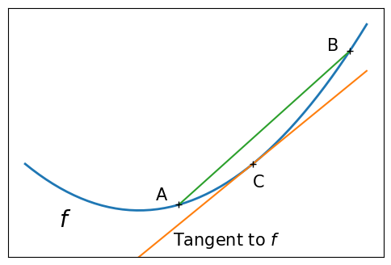
# Convexity as barycenter
plt.figure(figsize=(6, 4))
plt.plot(x, x**2 + np.exp(-5 * (x - 0.5) ** 2), linewidth=2)
plt.text(-0.7, -(0.6**2), "$f$", size=20)
plt.ylim(ymin=-1)
plt.xticks([])
plt.yticks([])
plt.tight_layout()
# Store figure for use in page.
glue("non_convex_func", plt.gcf(), display=False)
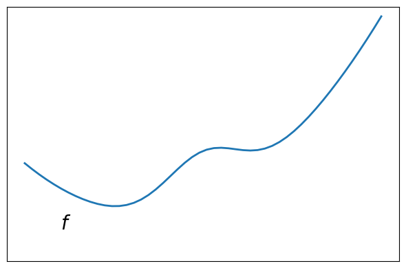
Smooth and non-smooth functions#
plt.figure(figsize=(4, 4))
x = np.linspace(-1.5, 1.5, 101)
# A smooth function
plt.plot(x, np.sqrt(0.2 + x**2), linewidth=2)
plt.text(-1, 0, "$f$", size=20)
plt.ylim(ymin=-0.2)
plt.axis("off")
plt.tight_layout()
# Store figure for use in page.
glue("smooth_func", plt.gcf(), display=False)
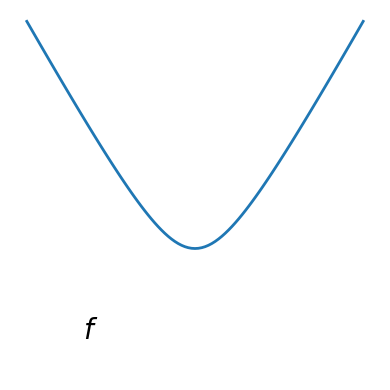
# A non-smooth function
plt.figure(figsize=(4, 4))
plt.plot(x, np.abs(x), linewidth=2)
plt.text(-1, 0, "$f$", size=20)
plt.ylim(ymin=-0.2)
plt.axis("off")
plt.tight_layout()
# Store figure for use in page.
glue("non_smooth_func", plt.gcf(), display=False)
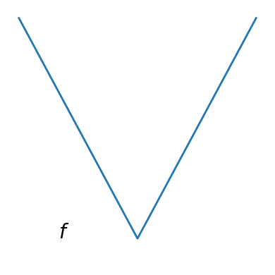
Noisy and non-noisy functions#
rng = np.random.default_rng(27446968)
x = np.linspace(-5, 5, 101)
x_ = np.linspace(-5, 5, 31)
# A smooth function
def f(x):
return -np.exp(-(x**2))
plt.figure(figsize=(5, 4))
plt.plot(x_, f(x_) + 0.2 * rng.normal(size=31), linewidth=2)
plt.plot(x, f(x), linewidth=2)
plt.ylim(ymin=-1.3)
plt.axis("off")
plt.tight_layout()
# Store figure for use in page.
glue("noisy_non_noisy", plt.gcf(), display=False)
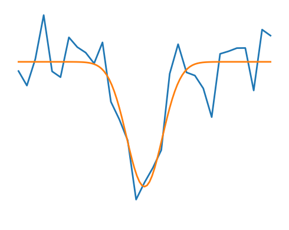
Optimizing with constraints#
x, y = np.mgrid[-2.9:5.8:0.05, -2.5:5:0.05] # type: ignore[misc]
x = x.T
y = y.T
def make_constraint_fig():
fig = plt.figure(figsize=(3, 2.5))
contours = plt.contour(
np.sqrt((x - 3) ** 2 + (y - 2) ** 2),
extent=[-3, 6, -2.5, 5],
cmap="gnuplot",
)
plt.clabel(contours, inline=1, fmt="%1.1f", fontsize=14)
plt.plot(
[-1.5, -1.5, 1.5, 1.5, -1.5], [-1.5, 1.5, 1.5, -1.5, -1.5], "k", linewidth=2
)
plt.fill_between([-1.5, 1.5], [-1.5, -1.5], [1.5, 1.5], color=".8")
plt.axvline(0, color="k")
plt.axhline(0, color="k")
plt.text(-0.9, 4.4, "$x_2$", size=20)
plt.text(5.6, -0.6, "$x_1$", size=20)
plt.axis("scaled")
plt.axis("off")
return fig
# Store figure for use in page.
glue("constraints_no_path", make_constraint_fig(), display=False)
# And now plot the optimization path
accumulator = []
def f(x):
# Store the list of function calls
accumulator.append(x)
return np.sqrt((x[0] - 3) ** 2 + (x[1] - 2) ** 2)
# We don't use the gradient, as with the gradient, L-BFGS is too fast,
# and finds the optimum without showing us a pretty path
def f_prime(x):
r = np.sqrt((x[0] - 3) ** 2 + (x[0] - 2) ** 2)
return np.array(((x[0] - 3) / r, (x[0] - 2) / r))
sp.optimize.minimize(
f, np.array([0, 0]), method="L-BFGS-B", bounds=((-1.5, 1.5), (-1.5, 1.5))
)
accumulated = np.array(accumulator)
fig = make_constraint_fig()
plt.plot(accumulated[:, 0], accumulated[:, 1]);
glue("constraints_path", fig, display=False)
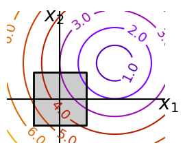
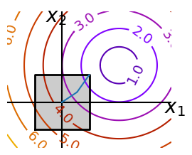
Brent’s method for convex and not-convex functions#
x = np.linspace(-1, 3, 100)
x_0 = np.exp(-1)
def func(x, epsilon):
return (x - x_0)**2 + epsilon * np.exp(-5 * (x - .5 - x_0)**2)
for epsilon in (0, 1):
f = lambda x : func(x, epsilon)
plt.figure(figsize=(3, 2.5))
plt.axes((0, 0, 1, 1))
# A convex function
plt.plot(x, f(x), linewidth=2)
# Apply Brent method. To have access to the iteration, do this in an
# artificial way: allow the algorithm to iter only once
all_x = []
all_y = []
for iter in range(30):
result = sp.optimize.minimize_scalar(
f,
bracket=(-5, 2.9, 4.5),
method="Brent",
options={"maxiter": iter},
tol=np.finfo(1.0).eps,
)
if result.success:
print("Converged at ", iter)
break
this_x = result.x
all_x.append(this_x)
all_y.append(f(this_x))
if iter < 6:
plt.text(
this_x - 0.05 * np.sign(this_x) - 0.05,
f(this_x) + 1.2 * (0.3 - iter % 2),
str(iter + 1),
size=12,
)
plt.plot(all_x[:10], all_y[:10], "k+", markersize=12, markeredgewidth=2)
plt.plot(all_x[-1], all_y[-1], "rx", markersize=12)
plt.axis("off")
plt.ylim(ymin=-1, ymax=8)
# Store figure for use in page.
glue(f"brent_epsilon_{epsilon}_func", plt.gcf(), display=False)
plt.figure(figsize=(4, 3))
plt.semilogy(np.abs(all_y - all_y[-1]), linewidth=2)
plt.ylabel("Error on f(x)")
plt.xlabel("Iteration")
plt.tight_layout()
# Store figure for use in page.
glue(f"brent_epsilon_{epsilon}_err", plt.gcf(), display=False)
Converged at 6
Converged at 23
Gradient descent examples#
An example demoing gradient descent by creating figures that trace the evolution of the optimizer.
# Preparatory work for loading helper code.
import sys
import os
sys.path.append(os.path.abspath("helper"))
from cost_functions import (
mk_quad,
mk_gauss,
rosenbrock,
rosenbrock_prime,
rosenbrock_hessian,
LoggingFunction,
CountingFunction,
)
x_min, x_max = -1, 2
y_min, y_max = 2.25 / 3 * x_min - 0.2, 2.25 / 3 * x_max - 0.2
A formatter to print values on contours:
def super_fmt(value):
if value > 1:
if np.abs(int(value) - value) < 0.1:
out = f"$10^{{{int(value):d}}}$"
else:
out = f"$10^{{{value:.1f}}}$"
else:
value = np.exp(value - 0.01)
if value > 0.1:
out = f"{value:1.1f}"
elif value > 0.01:
out = f"{value:.2f}"
else:
out = f"{value:.2e}"
return out
A gradient descent algorithm.
Do not use for production work: its a toy, use scipy’s optimize.fmin_cg
def gradient_descent(x0, f, f_prime, hessian=None, adaptative=False):
x_i, y_i = x0
all_x_i = []
all_y_i = []
all_f_i = []
for i in range(1, 100):
all_x_i.append(x_i)
all_y_i.append(y_i)
all_f_i.append(f([x_i, y_i]))
dx_i, dy_i = f_prime(np.asarray([x_i, y_i]))
if adaptative:
# Compute a step size using a line_search to satisfy the Wolf
# conditions
step = sp.optimize.line_search(
f,
f_prime,
np.r_[x_i, y_i],
-np.r_[dx_i, dy_i],
np.r_[dx_i, dy_i],
c2=0.05,
)
step = step[0]
if step is None:
step = 0
else:
step = 1
x_i += -step * dx_i
y_i += -step * dy_i
if np.abs(all_f_i[-1]) < 1e-16:
break
return all_x_i, all_y_i, all_f_i
def gradient_descent_adaptative(x0, f, f_prime, hessian=None):
return gradient_descent(x0, f, f_prime, adaptative=True)
def conjugate_gradient(x0, f, f_prime, hessian=None):
all_x_i = [x0[0]]
all_y_i = [x0[1]]
all_f_i = [f(x0)]
def store(X):
x, y = X
all_x_i.append(x)
all_y_i.append(y)
all_f_i.append(f(X))
sp.optimize.minimize(
f, x0, jac=f_prime, method="CG", callback=store, options={"gtol": 1e-12}
)
return all_x_i, all_y_i, all_f_i
def newton_cg(x0, f, f_prime, hessian):
all_x_i = [x0[0]]
all_y_i = [x0[1]]
all_f_i = [f(x0)]
def store(X):
x, y = X
all_x_i.append(x)
all_y_i.append(y)
all_f_i.append(f(X))
sp.optimize.minimize(
f,
x0,
method="Newton-CG",
jac=f_prime,
hess=hessian,
callback=store,
options={"xtol": 1e-12},
)
return all_x_i, all_y_i, all_f_i
def bfgs(x0, f, f_prime, hessian=None):
all_x_i = [x0[0]]
all_y_i = [x0[1]]
all_f_i = [f(x0)]
def store(X):
x, y = X
all_x_i.append(x)
all_y_i.append(y)
all_f_i.append(f(X))
sp.optimize.minimize(
f, x0, method="BFGS", jac=f_prime, callback=store, options={"gtol": 1e-12}
)
return all_x_i, all_y_i, all_f_i
def powell(x0, f, f_prime, hessian=None):
all_x_i = [x0[0]]
all_y_i = [x0[1]]
all_f_i = [f(x0)]
def store(X):
x, y = X
all_x_i.append(x)
all_y_i.append(y)
all_f_i.append(f(X))
sp.optimize.minimize(
f, x0, method="Powell", callback=store, options={"ftol": 1e-12}
)
return all_x_i, all_y_i, all_f_i
def nelder_mead(x0, f, f_prime, hessian=None):
all_x_i = [x0[0]]
all_y_i = [x0[1]]
all_f_i = [f(x0)]
def store(X):
x, y = X
all_x_i.append(x)
all_y_i.append(y)
all_f_i.append(f(X))
sp.optimize.minimize(
f, x0, method="Nelder-Mead", callback=store, options={"ftol": 1e-12}
)
return all_x_i, all_y_i, all_f_i
Run different optimizers on these problems.
levels = {}
for name, (f, f_prime, hessian), optimizer in (
('q_07_gd', mk_quad(0.7), gradient_descent),
('q_07_gda', mk_quad(0.7), gradient_descent_adaptative),
('q_002_gd', mk_quad(0.02), gradient_descent),
('q_002_gda', mk_quad(0.02), gradient_descent_adaptative),
('g_002_gda', mk_gauss(0.02), gradient_descent_adaptative),
(
'rb_gda',
(rosenbrock, rosenbrock_prime, rosenbrock_hessian),
gradient_descent_adaptative,
),
('g_002_cg', mk_gauss(0.02), conjugate_gradient),
(
'rb_cg',
(rosenbrock, rosenbrock_prime, rosenbrock_hessian),
conjugate_gradient,
),
('q_002_ncg', mk_quad(0.02), newton_cg),
('g_002_ncg', mk_gauss(0.02), newton_cg),
(
'rb_ncg',
(rosenbrock, rosenbrock_prime, rosenbrock_hessian),
newton_cg,
),
('q_002_bgfs', mk_quad(0.02), bfgs),
('g_002_bgfs', mk_gauss(0.02), bfgs),
('rb_bgfs', (rosenbrock, rosenbrock_prime, rosenbrock_hessian), bfgs),
('q_002_pow', mk_quad(0.02), powell),
('g_002_pow', mk_gauss(0.02), powell),
('rb_pow', (rosenbrock, rosenbrock_prime, rosenbrock_hessian), powell),
('g_002_nm', mk_gauss(0.02), nelder_mead),
('rb_nm', (rosenbrock, rosenbrock_prime, rosenbrock_hessian), nelder_mead),
):
# Compute a gradient-descent
x_i, y_i = 1.6, 1.1
counting_f_prime = CountingFunction(f_prime)
counting_hessian = CountingFunction(hessian)
logging_f = LoggingFunction(f, counter=counting_f_prime.counter)
all_x_i, all_y_i, all_f_i = optimizer(
np.array([x_i, y_i]), logging_f, counting_f_prime, hessian=counting_hessian
)
# Plot the contour plot
if not max(all_y_i) < y_max:
x_min *= 1.2
x_max *= 1.2
y_min *= 1.2
y_max *= 1.2
x, y = np.mgrid[x_min:x_max:100j, y_min:y_max:100j]
x = x.T
y = y.T
plt.figure(figsize=(3, 2.5))
plt.axes([0, 0, 1, 1])
X = np.concatenate((x[np.newaxis, ...], y[np.newaxis, ...]), axis=0)
z = np.apply_along_axis(f, 0, X)
log_z = np.log(z + 0.01)
plt.imshow(
log_z,
extent=[x_min, x_max, y_min, y_max],
cmap=plt.cm.gray_r,
origin="lower",
vmax=log_z.min() + 1.5 * np.ptp(log_z),
)
contours = plt.contour(
log_z,
levels=levels.get(f),
extent=[x_min, x_max, y_min, y_max],
cmap=plt.cm.gnuplot,
origin="lower",
)
levels[f] = contours.levels
plt.clabel(contours, inline=1, fmt=super_fmt, fontsize=14)
plt.plot(all_x_i, all_y_i, "b-", linewidth=2)
plt.plot(all_x_i, all_y_i, "k+")
plt.plot(logging_f.all_x_i, logging_f.all_y_i, "k.", markersize=2)
plt.plot([0], [0], "rx", markersize=12)
plt.xticks(())
plt.yticks(())
plt.xlim(x_min, x_max)
plt.ylim(y_min, y_max)
# Store figure for use in page.
glue(f'gradient_descent_{name}_func', plt.gcf(), display=False)
plt.figure(figsize=(4, 3))
plt.semilogy(np.maximum(np.abs(all_f_i), 1e-30),
linewidth=2,
label="# iterations")
plt.ylabel("Error on f(x)")
plt.semilogy(
logging_f.counts,
np.maximum(np.abs(logging_f.all_f_i), 1e-30),
linewidth=2,
color="g",
label="# function calls",
)
plt.legend(
loc="upper right",
frameon=True,
prop={"size": 11},
borderaxespad=0,
handlelength=1.5,
handletextpad=0.5,
)
plt.tight_layout()
# Store figure for use in page.
glue(f'gradient_descent_{name}_err', plt.gcf(), display=False)
/Users/mb312/.virtualenvs/sp-lectures/lib/python3.12/site-packages/scipy/optimize/_linesearch.py:312: LineSearchWarning: The line search algorithm did not converge
alpha_star, phi_star, old_fval, derphi_star = scalar_search_wolfe2(
/var/folders/vr/b3dbt6vd3pd73sjc_t9xj87r0000gn/T/ipykernel_74429/1172030723.py:15: LineSearchWarning: The line search algorithm did not converge
step = sp.optimize.line_search(
/var/folders/vr/b3dbt6vd3pd73sjc_t9xj87r0000gn/T/ipykernel_74429/2509265308.py:55: RuntimeWarning: More than 20 figures have been opened. Figures created through the pyplot interface (`matplotlib.pyplot.figure`) are retained until explicitly closed and may consume too much memory. (To control this warning, see the rcParam `figure.max_open_warning`). Consider using `matplotlib.pyplot.close()`.
plt.figure(figsize=(3, 2.5))
/var/folders/vr/b3dbt6vd3pd73sjc_t9xj87r0000gn/T/ipykernel_74429/1172030723.py:124: OptimizeWarning: Unknown solver options: ftol
sp.optimize.minimize(
 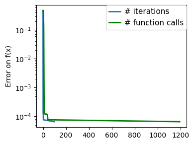
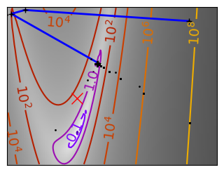
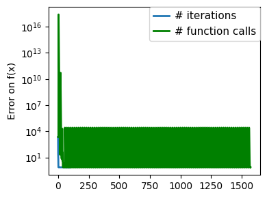
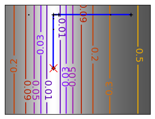
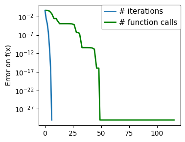
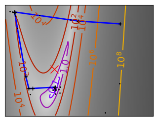
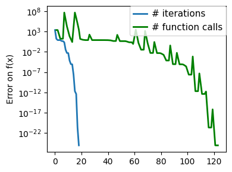
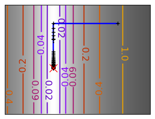
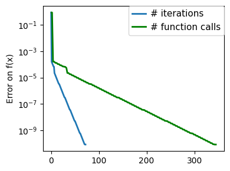
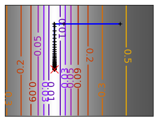
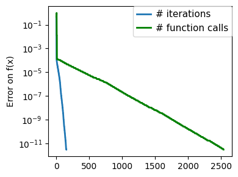
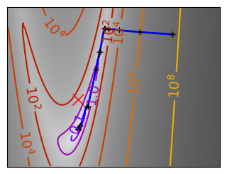
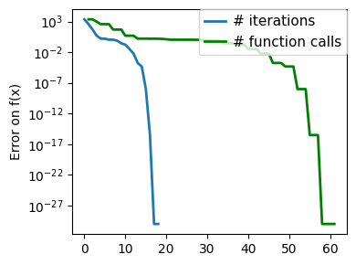
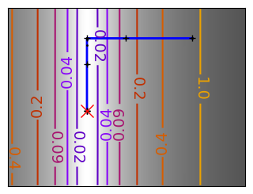
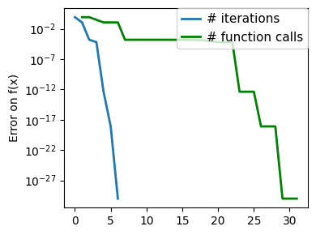
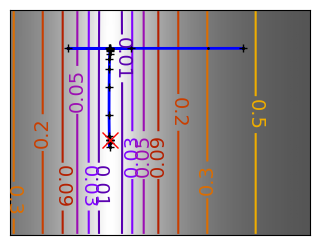
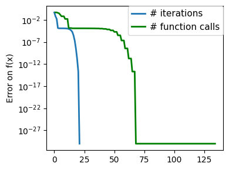
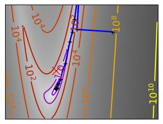
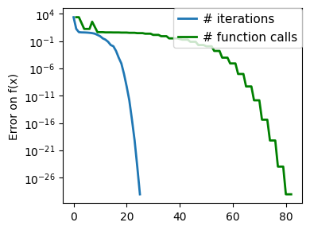
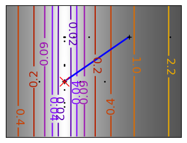
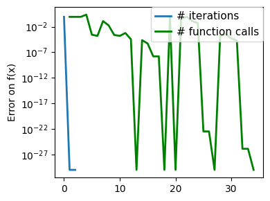
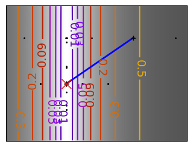
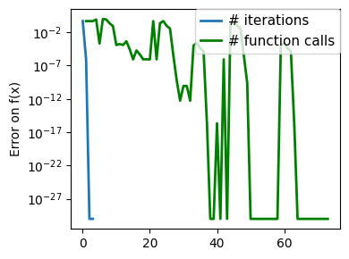
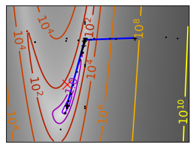
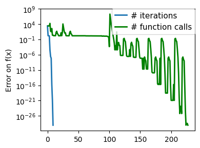
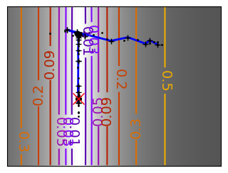
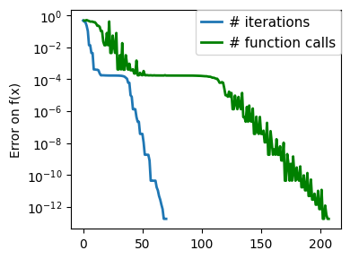
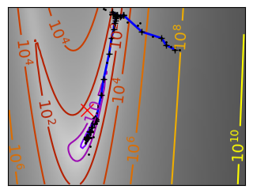
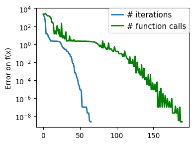
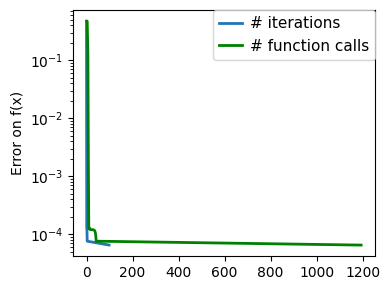
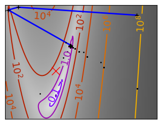
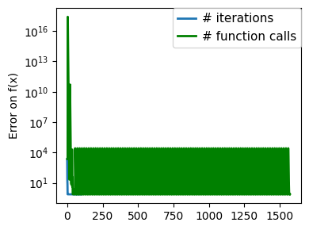
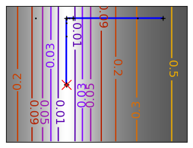
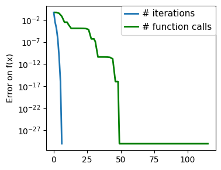
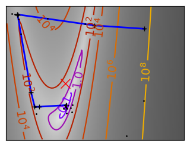
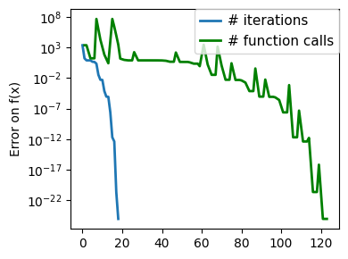
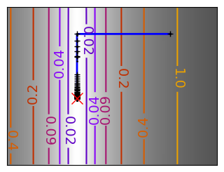
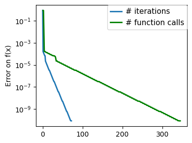
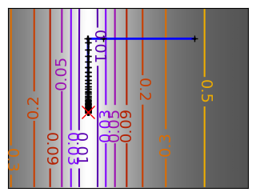
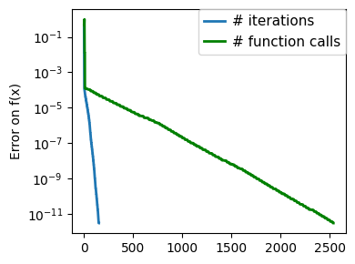
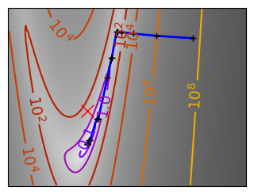
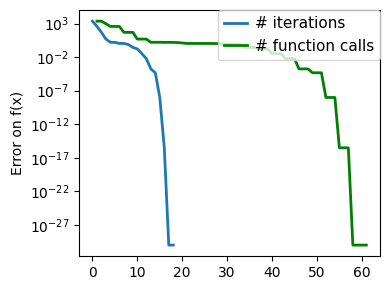
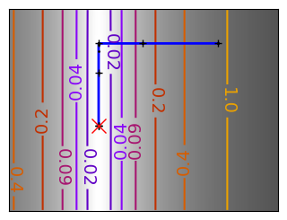
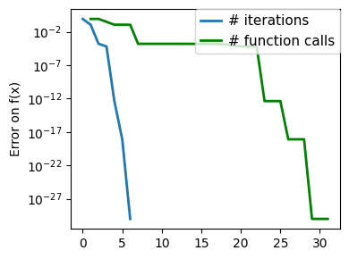
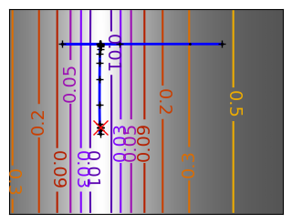
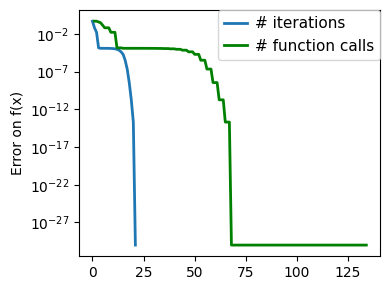
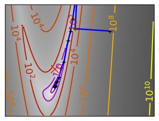
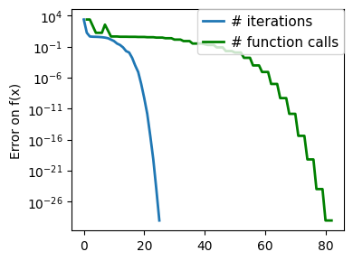
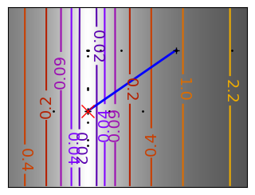
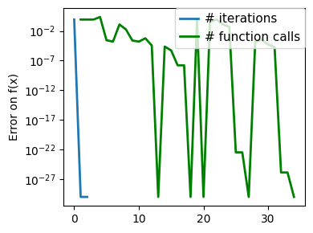
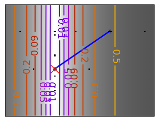
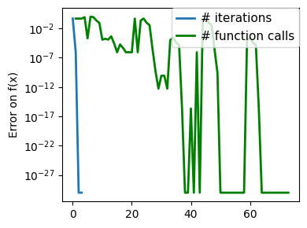
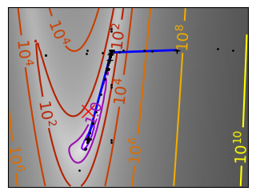
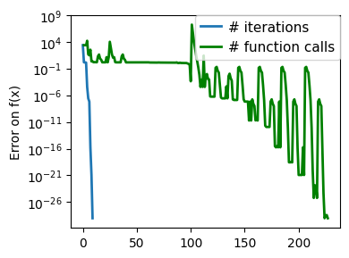
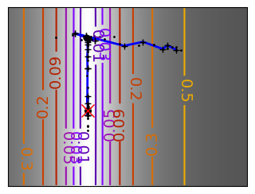
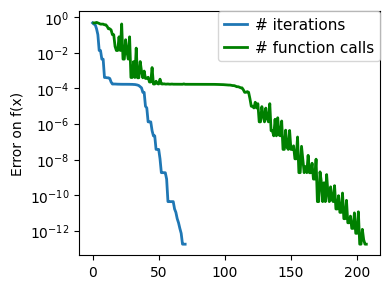
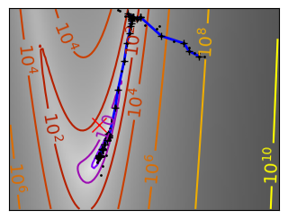
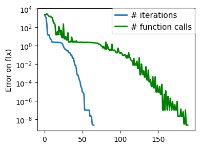
Plotting the comparison of optimizers#
Plots the results from the comparison of optimizers.
import pickle
with open('helper/compare_optimizers_py3.pkl', 'rb') as fobj:
results = pickle.load(fobj)
n_methods = len(list(results.values())[0]["Rosenbrock "])
n_dims = len(results)
symbols = "o>*Ds"
plt.figure(1, figsize=(10, 4))
plt.clf()
nipy_spectral = plt.colormaps["nipy_spectral"]
colors = nipy_spectral(np.linspace(0, 1, n_dims))[:, :3]
method_names = list(list(results.values())[0]["Rosenbrock "].keys())
method_names.sort(key=lambda x: x[::-1], reverse=True)
for n_dim_index, ((n_dim, n_dim_bench), color) in enumerate(
zip(sorted(results.items()), colors, strict=True)
):
for (cost_name, cost_bench), symbol in zip(
sorted(n_dim_bench.items()), symbols, strict=True
):
for (
method_index,
method_name,
) in enumerate(method_names):
this_bench = cost_bench[method_name]
bench = np.mean(this_bench)
plt.semilogy([method_index + 0.1 * n_dim_index],
[bench],
marker=symbol,
color=color)
# Create a legend for the problem type
for cost_name, symbol in zip(sorted(n_dim_bench.keys()), symbols, strict=True):
plt.semilogy([-10], [0], symbol, color=".5", label=cost_name)
plt.xticks(np.arange(n_methods), method_names, size=11)
plt.xlim(-0.2, n_methods - 0.5)
plt.legend(loc="best", numpoints=1, handletextpad=0, prop={"size": 12}, frameon=False)
plt.ylabel("# function calls (a.u.)")
# Create a second legend for the problem dimensionality
plt.twinx()
for n_dim, color in zip(sorted(results.keys()), colors, strict=True):
plt.plot([-10], [0], "o", color=color, label=f"# dim: {n_dim}")
plt.legend(
loc=(0.47, 0.07),
numpoints=1,
handletextpad=0,
prop={"size": 12},
frameon=False,
ncol=2,
)
plt.xlim(-0.2, n_methods - 0.5)
plt.xticks(np.arange(n_methods), method_names)
plt.yticks(())
plt.tight_layout()
# Store figure for use in page.
glue(f'compare_optimizers', plt.gcf(), display=False)
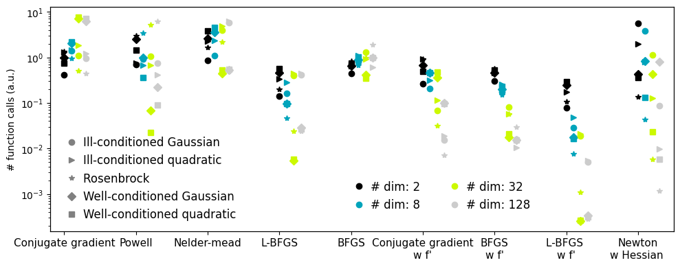
Optimization with constraints, SLSQP and COBYLA#
An example showing how to do optimization with general constraints using SLSQP and COBYLA.
x, y = np.mgrid[-2.03:4.2:0.04, -1.6:3.2:0.04]
x = x.T
y = y.T
plt.figure(figsize=(3, 2.5))
plt.axes((0, 0, 1, 1))
contours = plt.contour(
np.sqrt((x - 3) ** 2 + (y - 2) ** 2),
extent=[-2.03, 4.2, -1.6, 3.2],
cmap="gnuplot",
)
plt.clabel(contours, inline=1, fmt="%1.1f", fontsize=14)
plt.plot([-1.5, 0, 1.5, 0, -1.5], [0, 1.5, 0, -1.5, 0], "k", linewidth=2)
plt.fill_between([-1.5, 0, 1.5], [0, -1.5, 0], [0, 1.5, 0], color=".8")
plt.axvline(0, color="k")
plt.axhline(0, color="k")
plt.text(-0.9, 2.8, "$x_2$", size=20)
plt.text(3.6, -0.6, "$x_1$", size=20)
plt.axis("tight")
plt.axis("off")
# And now plot the optimization path
accumulator = []
def f(x):
# Store the list of function calls
accumulator.append(x)
return np.sqrt((x[0] - 3) ** 2 + (x[1] - 2) ** 2)
def constraint(x):
return np.atleast_1d(1.5 - np.sum(np.abs(x)))
sp.optimize.minimize(
f, np.array([0, 0]), method="SLSQP", constraints={"fun": constraint, "type": "ineq"}
)
accumulated = np.array(accumulator)
plt.plot(accumulated[:, 0], accumulated[:, 1])
# Store figure for use in page.
glue(f'constraints_non_bounds', plt.gcf(), display=False)
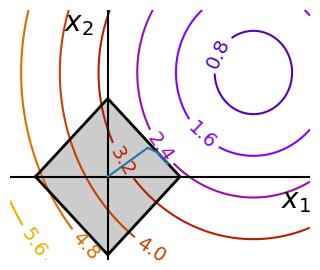